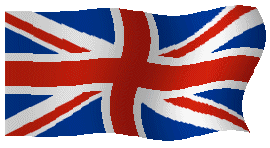
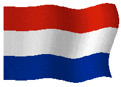

>MATRICES OF CONSCIOUSNESS
I am. That's the only consistent thing that you can know about me.
But, that's not a good description.
I enjoy learning new things, and playing around with systems. I also don't seem to very good at describing what it is I actually do.
Mainly at the moment I'm working on this website, as it's easy, relaxing, and I don't have to think too hard about it.
My operating system of choice is GNU/Linux. I run Arch on my main laptop, and Debian on a T420, and an X200. Planning to libreboot the x200 at some point soon.

As well as messing with computers, I do quite a lot of "creative" stuff.
I enjoy watercolour painting, my style can best be described as a strange homebrew form of line and wash. I also enjoy writing short stories (generally lovecraftian horror), and essays on the things that interest me. You can find the latest thing I've written on the projects page of this site.
A long time ago I was quite interested in pixel art, and still occasionally do it. For a while I designed a lot of Flags, and Maps. And at one point I wrote a large part of a Call of Cthhulhu Campaign, but mostly background info. I'm pretty competent with photo editing, and once made an album cover for someone. Occasionally I digitally draw things too. I'm planning on putting some of my stuff here, but procrastinating on it.
I try to read regularly, but often don't. Some of my favourite books however include, The Neuromancer Trilogy, Prometheus Rising, Quantum Psychology, Gnosticism: New light on the ancient tradition, and Crime and Punishment.
I believe in 4 freedoms, hence the name of 4F in the domain, these freedoms are, Free software, Free Information, Free society, and Free speech.
I recently decided to put my money where my mouth is and joined as an associate member of the Free Software Foundation, and also became a member of a European Pirate Party.

Privacy, and Anonymity is a big concern for me and I try to avoid the botnets where possible. In that aim I don't use networks such as Discord, Facebook, Instagram, or any of the other sinister data
collection operations. My weaknesses in that regard tend to be 4chan, and Lainchan.
Politically, at a point of time I would have considered myself to be on the right. These days I don't bother as much with that kind of thing.

